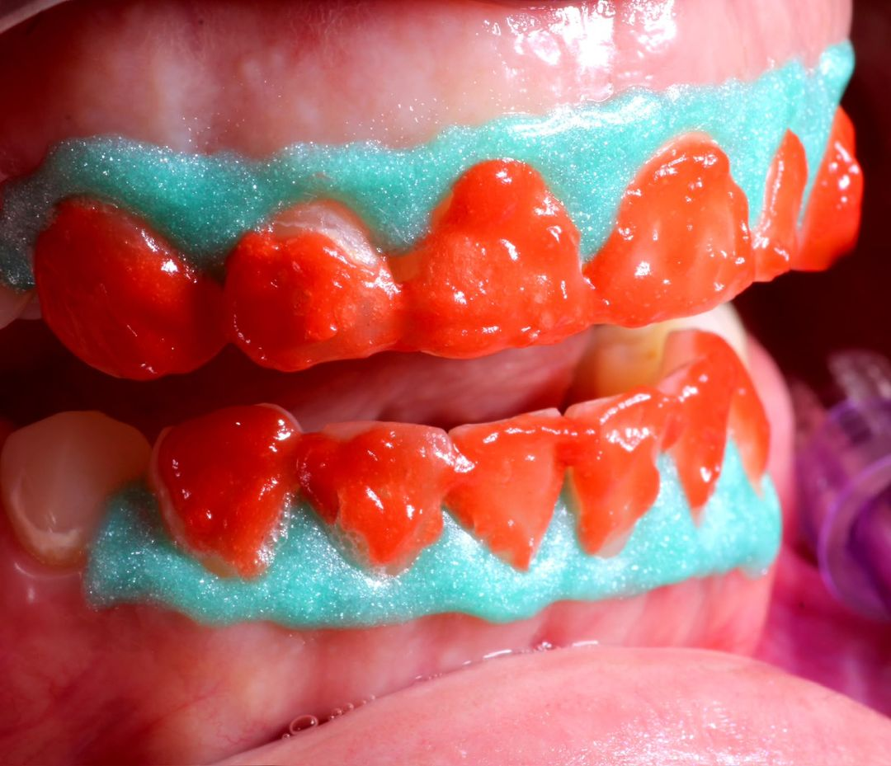
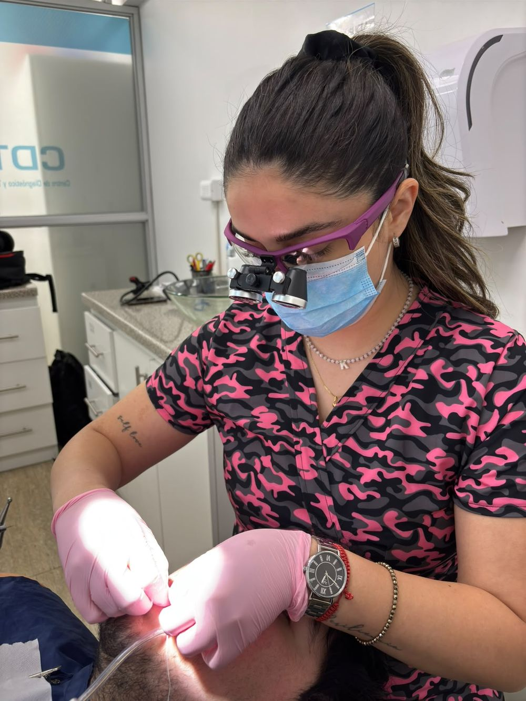
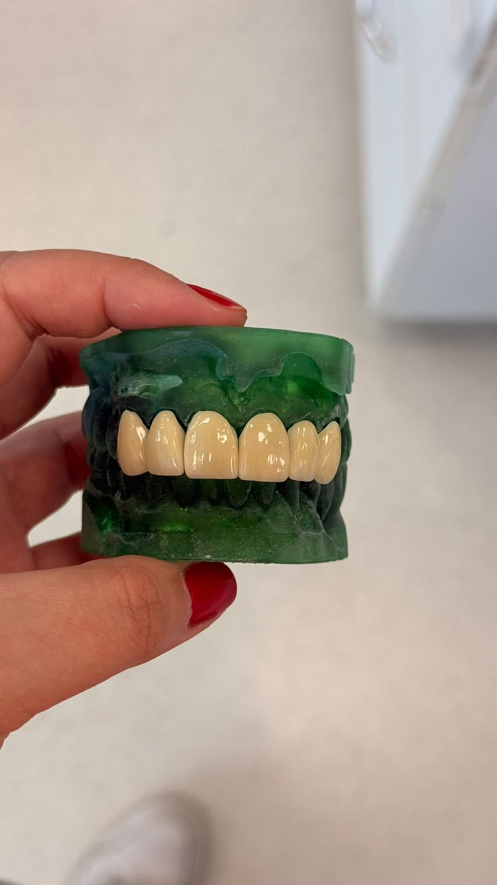
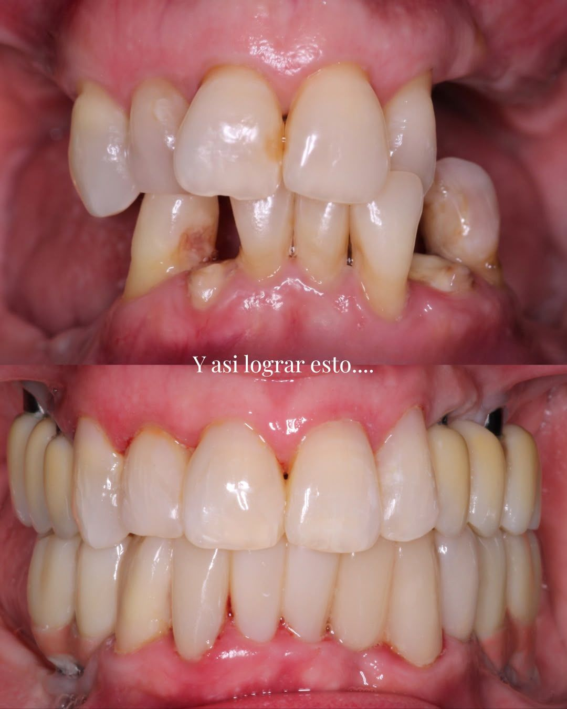
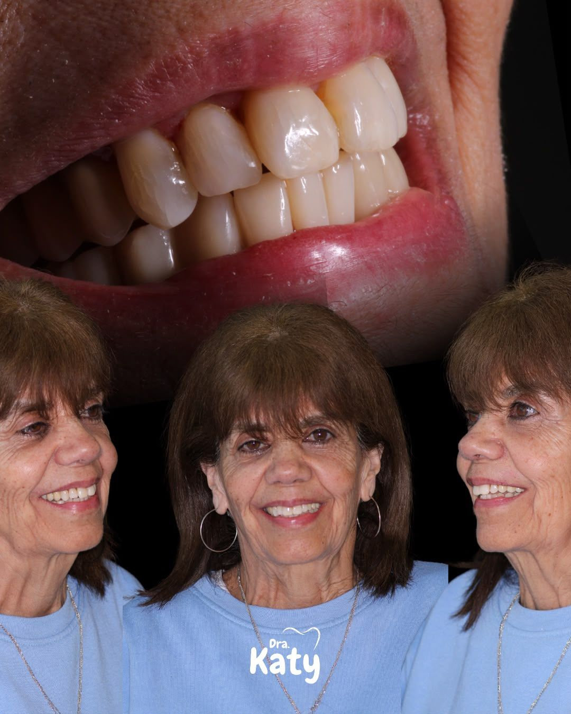
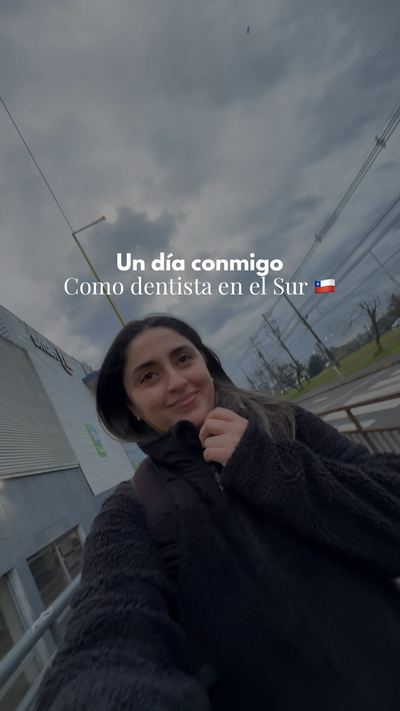
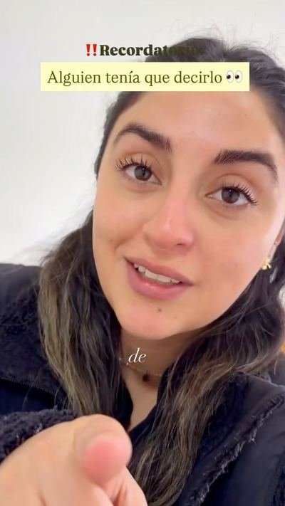
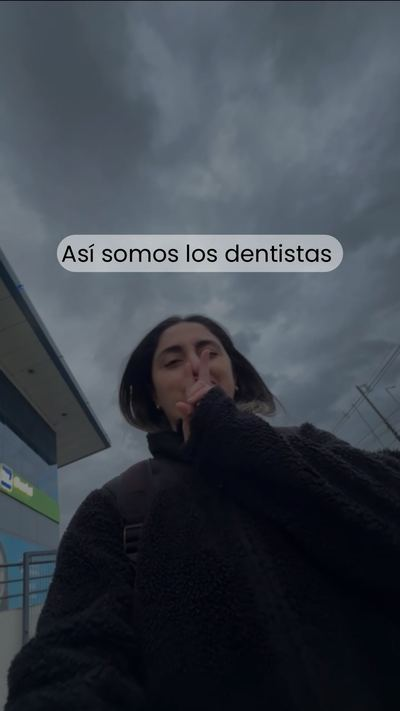

Durante el tratamiento
Blanqueamiento en clínica
Antes de aplicar el gel, protejo las encías con una barrera. Así el tratamiento actúa solo sobre los dientes.
Quiero este tratamientoDentista en el sur de Chile
Soy Katy, cirujana dentista y especialista en rehabilitación oral. En Puerto Montt hago blanqueamientos, carillas y diseños de sonrisa que se ven naturales, y también resuelvo los casos que necesitan reconstruir la boca.
Más de 900 sonrisas transformadas · Conóceme


Empecé haciendo voluntariados y después viví y trabajé en el extremo sur, en Hornopirén. Ahí vi lo que de verdad necesitaban mis pacientes, y me propuse acercarles una odontología real, pensada para cada persona y no para la foto.
Por eso hice la especialidad en Rehabilitación Oral: para poder resolver desde un blanqueamiento hasta los casos que nadie más quería tomar. Hoy atiendo en Puerto Montt y sigo con la misma idea: una odontología real, para cada persona.
Elige un tratamiento o deja que pasen solos. Cada caso se publica con autorización escrita del paciente.

Durante el tratamiento
Antes de aplicar el gel, protejo las encías con una barrera. Así el tratamiento actúa solo sobre los dientes.
Quiero este tratamiento
Durante el tratamiento
Cada sesión se controla de cerca para cuidar la sensibilidad y lograr un color parejo y natural.
Quiero este tratamiento
Antes y después
Dientes frontales con desgaste y manchas, corregidos en forma y color.
Quiero este tratamiento
Resultado
El objetivo es que se vean como dientes propios: con textura, brillo y forma que calcen con tu cara.
Quiero este tratamiento
Planificación
Antes de tocar un diente, planificamos la nueva sonrisa en un modelo de tu boca. Así puedes verla antes de decidir.
Quiero este tratamiento
Resultado
Forma, tamaño y color pensados en conjunto, para que la sonrisa se vea natural al hablar y al reír.
Quiero este tratamiento
Antes y después
Dientes desgastados, perdidos y en mala posición, rehabilitados para volver a masticar y sonreír con tranquilidad.
Quiero este tratamiento
Resultado
El resultado se mide en la sonrisa de cada paciente: de frente, de perfil y en el día a día.
Quiero este tratamiento¿Qué te gustaría mejorar? Estos son valores de referencia; el precio final lo conversamos en tu evaluación, antes de empezar.
En clínica o ambulatorio, con cubetas para la casa.
Corrigen forma, color y pequeños espacios en pocas sesiones.
Más resistentes y estables en el color a largo plazo.
Planificamos tu sonrisa completa antes de tocar un diente.
Aplicación en la zona de la boca y la cara, previa evaluación.
Dientes perdidos, desgastados o trabajos antiguos que hay que rehacer. Es mi especialidad.
Fijas o removibles, hechas a tu medida.
Débito, crédito y transferencia.
Te entrego la boleta y el detalle de prestaciones para que pidas tu reembolso.
No atiendo por Fonasa.
Me cuentas qué te gustaría mejorar de tu sonrisa y qué tratamientos has tenido antes.
Examino tu boca completa: dientes, encías y mordida, no solo lo que se ve.
En palabras simples, con lo que es posible en tu caso y el valor de cada alternativa.
Sin presión. Puedes empezar, pensarlo con calma o hacerme todas las preguntas que necesites.
Explico tratamientos, resuelvo dudas y muestro cómo es un día como dentista en el sur. Ver todos los reels (se abre en otra pestaña)

Un día conmigo como dentista en el sur (reel en Instagram, se abre en otra pestaña) El blanqueamiento casero, ¿es para mí? (reel en Instagram, se abre en otra pestaña)
El blanqueamiento casero, ¿es para mí? (reel en Instagram, se abre en otra pestaña) Cómo dejar de tener mal aliento (reel en Instagram, se abre en otra pestaña)
Cómo dejar de tener mal aliento (reel en Instagram, se abre en otra pestaña) POV: vas al dentista (reel en Instagram, se abre en otra pestaña)
POV: vas al dentista (reel en Instagram, se abre en otra pestaña)
Un recordatorio que alguien tenía que decir (reel en Instagram, se abre en otra pestaña)
Así somos los dentistas (reel en Instagram, se abre en otra pestaña)No, si se hace con una evaluación previa y productos adecuados. Puede dar sensibilidad pasajera, que controlamos ajustando el tratamiento.
La resina es más económica y se hace en menos tiempo. La cerámica es más resistente y mantiene mejor el color con los años. En la evaluación vemos cuál calza con tu caso y tu presupuesto.
Es planificar tu sonrisa completa (forma, tamaño y color de los dientes) en armonía con tu cara, antes de hacer cualquier tratamiento.
Porque la zona de la boca y la cara es parte de nuestro trabajo. Siempre se hace después de una evaluación.
Sí, por reembolso. Te entrego la boleta y el detalle de prestaciones para que lo solicites. No atiendo por Fonasa.
¿Quieres ver cómo trabajo? En mi Instagram explico cada tratamiento paso a paso: @dentista.katy (se abre en otra pestaña).
Lo más rápido es WhatsApp. Si prefieres, déjame tus datos y te contacto yo para coordinar tu evaluación.
Escríbeme por WhatsApp (se abre en otra pestaña)